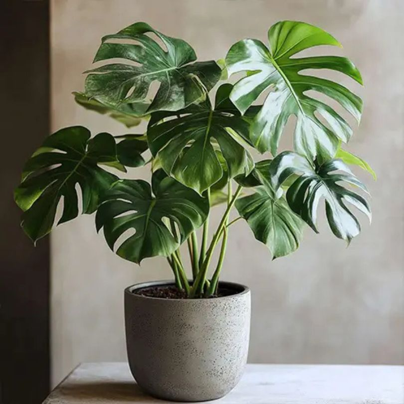
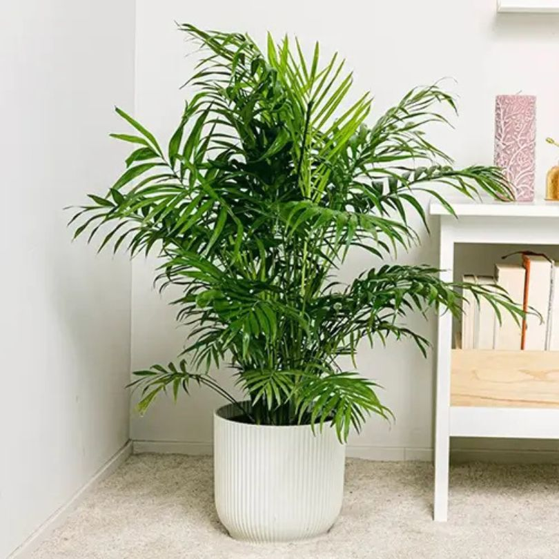
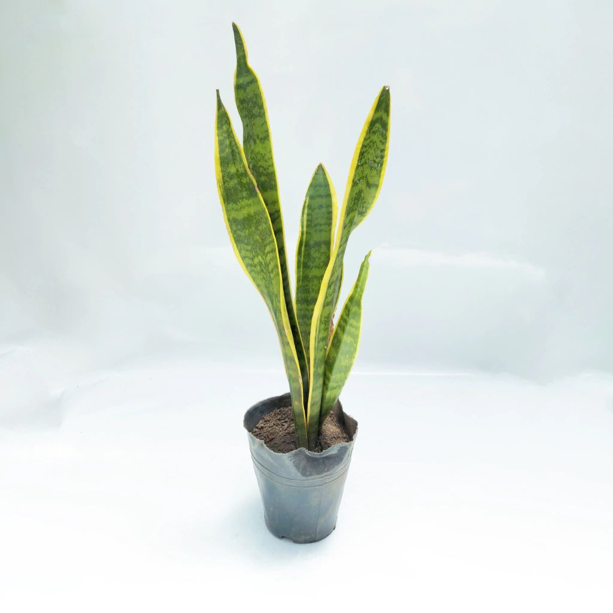

En La Tiendita creemos que cada planta es más que un simple adorno: es un ser vivo que nos acompaña,
nos ayuda a respirar mejor y nos conecta con un ritmo más natural en medio de la vida acelerada.
Nuestro proyecto nació con un sueño sencillo: acercar la belleza del verde a cada rincón del hogar, sin importar si vivís en un departamento
pequeño o en una casa con patio.
Acá vas a encontrar mucho más que plantas. Te ofrecemos un espacio donde aprender, inspirarse y descubrir cómo las plantas pueden transformar tu día a día.
"Nuestras plantas destacadas"
Monstera deliciosa (Costilla de Adán)

También conocida como Costilla de Adán, es una de las plantas más elegidas por los amantes de la decoración natural. Sus hojas grandes,
verdes y con perforaciones únicas aportan un toque exótico y elegante a cualquier ambiente.
Además de su belleza, la Monstera es muy fácil de cuidar: prefiere lugares luminosos, pero sin sol directo, y agradece un riego moderado,
dejando secar un poco el sustrato entre cada vez.
Chamaedorea elegans (Palmera de salón)

Si buscás una planta que aporte verde, frescura y armonía dentro de casa, la Chamaedorea elegans —también conocida como palmera de salón— es
una gran aliada. Su porte esbelto y sus hojas finas crean una sensación de calma y movimiento.
Se adapta muy bien a ambientes con poca luz directa, lo que la convierte en una opción perfecta para interiores. Además, ayuda a mejorar la calidad del aire.
Palo de agua

El palo de agua es una planta de interior que prefiere la luz indirecta y abundante, pero sin sol directo. Se debe regar solo cuando el sustrato esté seco para evitar que las raíces se pudran. Sus hojas se pondrán amarillas si hay exceso de riego y las puntas se volverán marrones si falta humedad ambiental, así que pulverizar agua en las hojas de vez en cuando es beneficioso.
Sansevieria

La sansevieria, conocida como lengua de suegra, es una planta de interior que purifica el aire, produciendo oxígeno por la noche. Es fácil de cuidar y se adapta a poca luz, pero el exceso de agua puede pudrir sus raíces. Tradicionalmente, algunas de sus partes se han usado para remedios, aunque debe ser manejada con precaución, ya que es tóxica para mascotas y no debe ingerirse.
"10 consejos prácticos de jardinería"
- Conocé tu planta: cada especie tiene necesidades únicas.
- Observá la luz de tu casa: orientaciones norte y este suelen ser ideales.
- Menos es más en el riego: el exceso de agua es el error más común.
- Macetas con drenaje: fundamentales para evitar raíces podridas.
- Fertilizá en las estaciones correctas: primavera y verano son clave.
- Poda inteligente: eliminá hojas secas para estimular crecimiento.
- Cambiá de maceta cuando crezca: el trasplante evita raíces asfixiadas.
- Controlá plagas naturalmente: el jabón potásico es un aliado.
- Agrupá plantas con necesidades similares: facilita su cuidado.
- Disfrutá del proceso: la jardinería es también terapia y paciencia.